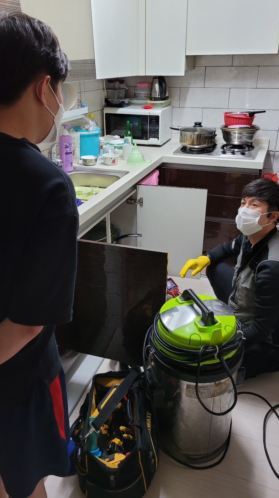
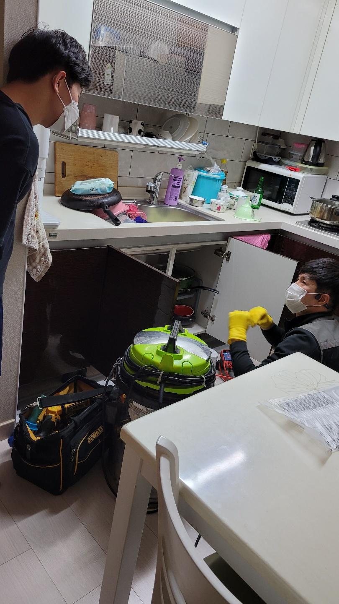
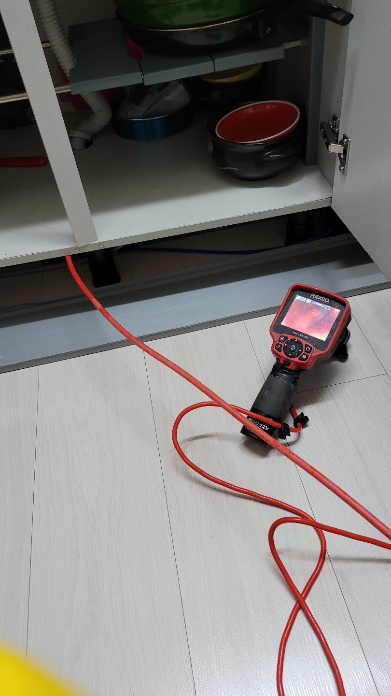
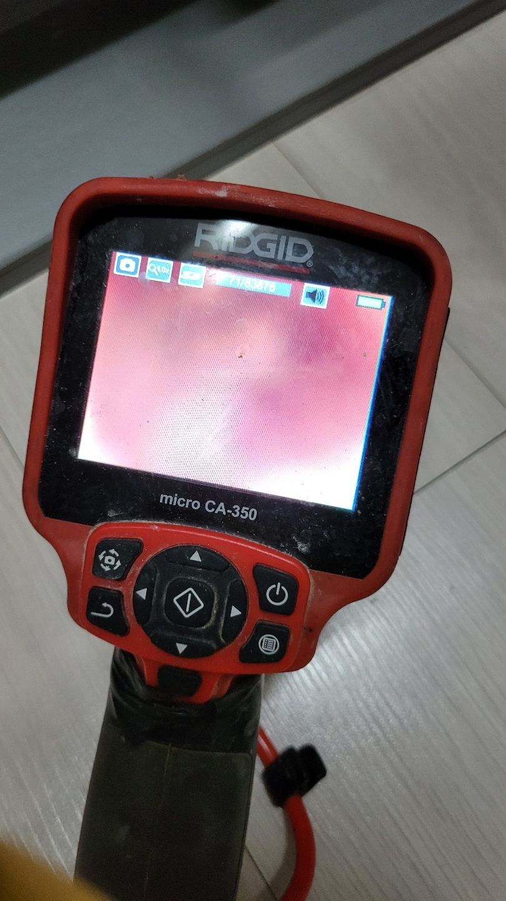
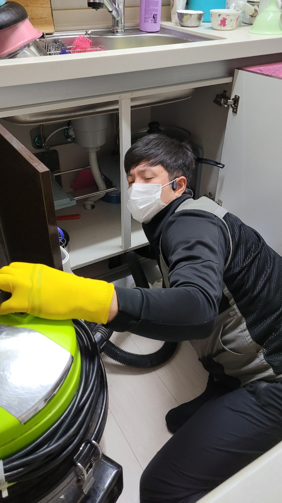
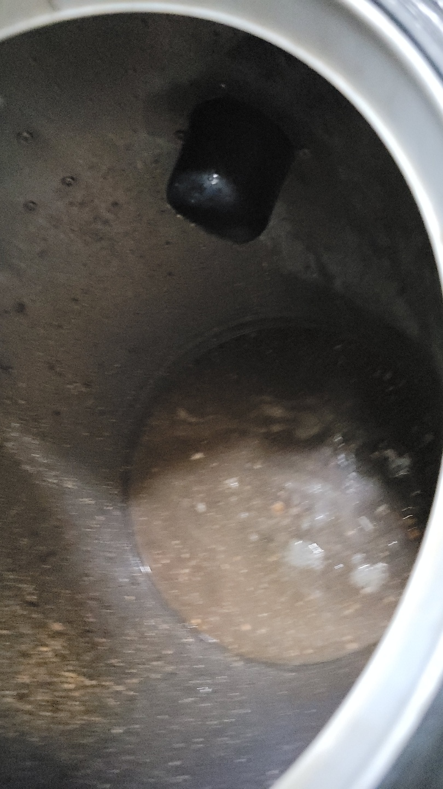

🏠 오산시 초평동 세교동 싱크대막힘 신속한 원인 파악으로 해결 완료하였습니다!
오산 싱크대막힘 전문 시공 후기

📋 작업 개요
- 위치: 오산
- 서비스 유형: 싱크대막힘, 하수구막힘, 배관막힘, 역류해결, 뚫는업체, 고압세척
- 작업 일시: 2022. 8. 4. 10:59
- 업체명: 하수구수사대 (010-5615-2118)
🔍 문제 상황
안녕하세요.하수구수사대 입니다.반갑습니다.
점점 날씨가 더워지고 있죠. 그래도 장마철이 지나서 하루 종일 내리던 비는 잠잠해졌네요. 무더위가 시작되는 만큼 집에서 보내는 시간이 늘어나고 설거지를 바로바로 하지 않으면 더운 날씨 탓에 날파리가 꼬여 이런저런 면에서 물의 사용량이 급격히 늘어나는 계절이 바로 여름입니다.
오늘 다녀온 현장은 오산시에 위치한 한 가정집이었습니다.
이번에 의뢰를 주신 분께서는 남편과 아이 둘을 키우며 지내고 계시는 한 주부셨는데요. 어느 순간부터 설거지를 할 때 물이 시원하게 빠지지 않고 뽀글뽀글 올라오기도 했다고 해요.
여름철이라 안 그래도 에어컨을 풀가동해 창문을 웬만하면 열지 않는데 그래서인지 냄새가 심하게 나서 급히 저희 오산시 초평동 세교동 싱크대막힘 해결사 하수구수사대에 의뢰를 주셨습니다.

🔎 원인 분석
💡 전문가 진단: 오늘 다녀온 현장은 오산시에 위치한 한 가정집이었습니다.
해당 장비를 챙겨 현장으로 출동하였습니다.
어떠한 상황인지 설명을 들어도 직접 가서 보지 않는 이상 원인이 무엇인지 파악하기란 어렵지 때문에 싱크대막힘을 뚫어줄 수 있는 다양한 장비를 챙겨서 현장에 투입되고 있는데요.
저희는 최신 장비들을 다양하게 보유하고 있기 때문에 신속 정확한 판단과 해결을 해드리고 있습니다. 현장에 투입되어 다양한 장비를 통해 원인 파악에 나섰습니다. 어떠한 곳에서 무슨 이유로 막힘과 역류가 이루어지고 있는지 판단을 해야 해결이 가능하기 때문입니다.
싱크대나 하수구가 막힐 경우에는
심하게는 다른 이웃에게까지 동시다발적으로 피해를 줄 수 있습니다. 그렇기 때문에 빠른 대처가 필요하죠. 하지만 이번 가정집 같은 경우 다행히도 막힘과 역류가 시작된 지 얼마 되지 않았고 그리 심하지 않아 다른 이웃에게까지 피해가 가진 않은 상황이었습니다.

🔧 작업 과정
오산시 초평동 세교동 싱크대막힘 해결 전문 하수구수사대는 원인 찾기를 위해 내시경을 통한 배관 관찰을 시도했습니다. 배수관 안은 특별한 장비 없인 들여다보는 것이 불가능합니다.
원인 파악을 진행하였습니다.
최신식 내시경 장비를 배관 안으로 투입시켜 살펴보니 배수관에 많은 음식물과 이물질들이 쌓여있더라고요. 그럼으로 물이 시원하게 내려가지 않고 계속해서 역류하게 되었던 것입니다. 이제 원인 파악을 했으니 바로 해결 과정에 돌입해야겠죠?
고압 세척을 위해 호스를 배수관 내부로 밀어 넣어 작업을 진행했습니다. 물로 진행이 되는 작업이기에 배관에 피해를 주지도 않아 싱크대막힘을 해결하는 방법 중에선 가장 효율적이고 안전한 방법이라고 할 수 있습니다.
재차 확인을 한 뒤 작업을 마무리 짓고 있는데요.
오산시 초평동 세교동 싱크대막힘 해결을 위해 진행된 작업 도중 발생한 쓰레기나 이물질들은 저희가 모두 책임지고 정리 및 처리까지 해드리고 있습니다. 내시경을 통해 배수관 안의 상태를 의뢰자분들께 보여드린 후 깔끔한 뒷정리를 마치고 저희는 돌아왔습니다.
요즘 같은 무더위에 싱크대나 하수구가 막히게 되면 역류하게 되고 그 악취는 이루 말할 수 없습니다. 또한 나 뿐만이 아니라 이웃에게까지 피해가 생길 수 있으니 막힘 현상이 시작됐을 때 빠른 대처가 필요합니다.
저희 하수구수사대는 10년 이상 된 노하우를 지닌 전문가들로 구성이 되어 있고


✅ 작업 완료
최신식 장비들도 다양하게 준비가 되어있기 때문에 전문적인 작업 진행이 가능합니다.
경기도 오산시 오산로160번길 15 201-L16호




⚠️ 주방 싱크대 배관 막힘 예방 수칙
- ✅ 기름기가 묻은 식기나 프라이팬은 설거지 전 키친타올로 반드시 기름때를 닦아내세요.
- ✅ 주기적으로 싱크대 개수대에 뜨거운 물을 가득 받아 한 번에 내려 배관 내부 기름을 씻어내세요.
- ✅ 배수구 거름망을 미세한 필터로 사용하시고 음식물 찌꺼기가 틈으로 새어 들지 않게 관리하세요.
- ✅ 베이킹소다와 식초를 뜨거운 물과 함께 일주일에 한 번씩 부어주면 배관 살균과 막힘 예방에 좋습니다.
💡 핵심 정리
- 확실한 장비 작업(내시경 점검 및 샤프트 스케일링)으로 원인을 뿌리 뽑습니다.
- 작업 후 1년 이내에 동일한 부위 재발 시 100% 무상 A/S 서비스를 보장합니다.
- 서울 · 경기 · 인천 전 지역에 24시간 언제든 긴급 출동할 수 있도록 항시 대기 중입니다.
❓ 자주 묻는 질문 (FAQ)
🚨 오산 싱크대막힘 문제로 고민이신가요?
정확한 원인 진단과 확실한 시공으로 재발 없는 해결을 약속드립니다.
24시간 긴급 출동 | 서울 · 경기 · 인천 전지역 | 1년 내 재발 시 무상 A/S